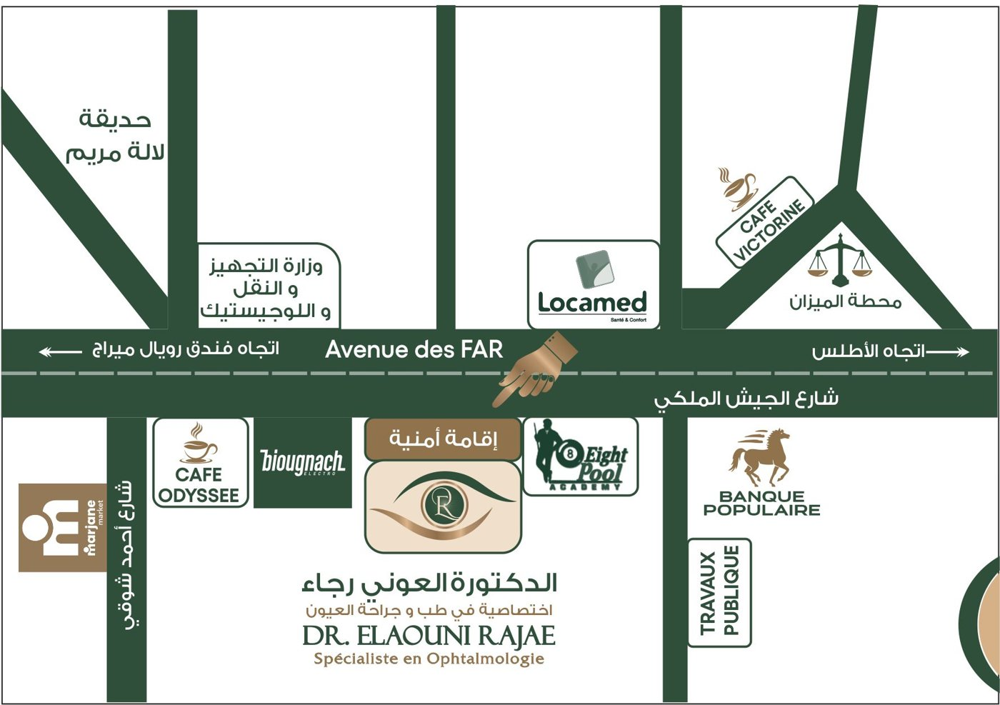

طبيبة العيون بفاس
نعتني بعيونكم في كل مراحل العمر
فحص، تشخيص وجراحة العيون للكبار والأطفال، بشارع الجيش الملكي.

تكوين بالمملكة المتحدةالكلية الملكية لأطباء العيون
دبلومات من المملكة المتحدة وإسبانيا
عضوة بالجمعية الفرنسية لطب العيون
OCT، تصوير الشبكية والإيكوغرافيا
CNSS · CNOPS · التعاضديات
خدماتنا
رعاية شاملة لصحة عيونكم
معلومات عملية
مواعيد العمل والعنوان
الإثنين – الجمعة9:00 – 17:00
السبت9:00 – 13:00
الأحدمغلق
شارع الجيش الملكي، إقامة أمنية
الطابق الثالث، المكتب رقم 17، فاس (بين بيوغناش و Eight Pool)
